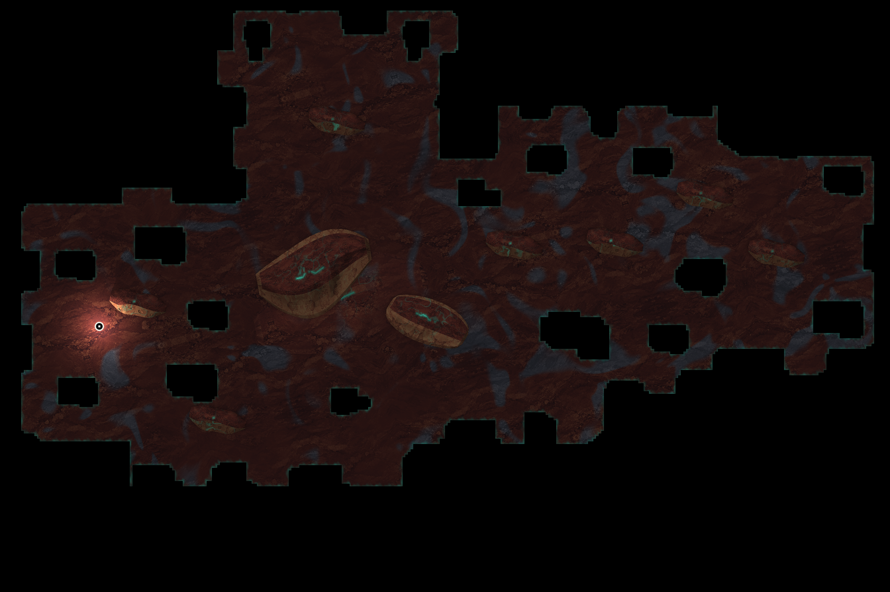
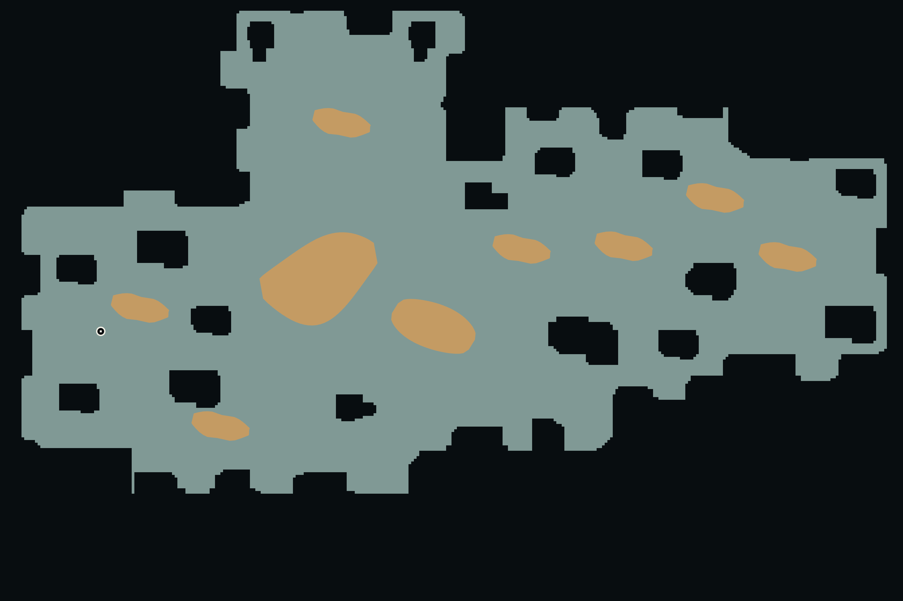

四个现有世界的原配色与实体。共同应用矩形拼合、自由断缘和偏置宽臂规则；下方可对照结构剪影。
中污染 · 固定种子 20261012 · 点击看原尺寸
DEV 固定样本。 未通过完整地图准入。
锈红砂脊 · 冷灰夹层

外岸通过 · 几何门未过 · G2未过
扩展 2 处 · 新增地块 513,152 px² · 画框 2304 × 1792 → 2688 × 1792 · 主体平移 0, 96 px
